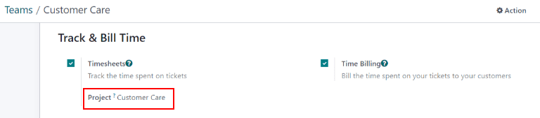
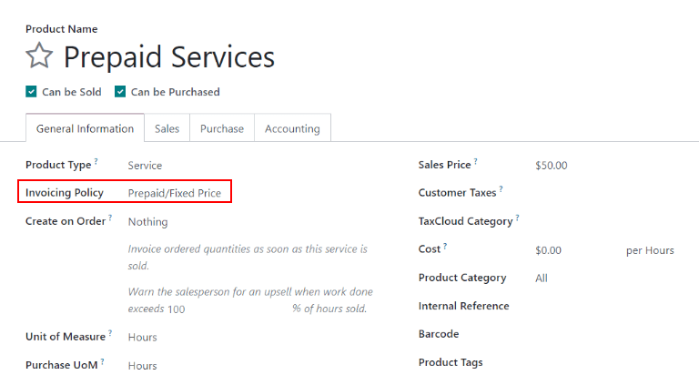

Seguimiento y facturación del tiempo¶
La aplicación Servicio de asistencia proporciona a los equipos la capacidad de realizar un seguimiento de la cantidad de horas dedicadas a trabajar en un ticket, y facturar a un cliente por ese tiempo. A través de integraciones con las aplicaciones Ventas, Hojas de horas y Contabilidad, se puede cobrar a los clientes una vez que el trabajo se ha completado, o incluso antes de que haya comenzado.
Advertencia
Dado que las funciones Seguimiento y facturación del tiempo requieren la integración con otras aplicaciones, su activación puede requerir la instalación de aplicaciones adicionales.
Al instalar una nueva aplicación en una base de datos Gratis con una aplicación se activa un periodo de prueba de 15 días. Al final del periodo de prueba, si no se ha añadido una suscripción de pago a la base de datos, se desactivará.
Configurar las funciones de seguimiento y facturación del tiempo¶
Antes de que se le pueda facturar a un cliente por servicios de soporte, debe habilitar las funciones de seguimiento y facturación del tiempo. Cada equipo que deseé utilizar estas funciones deberán activarlas en Servicio de asistencia.
Habilitar el seguimiento y facturación del tiempo en un equipo de Servicio de asistencia¶
Para ver y habilitar las funciones de seguimiento y facturación del tiempo en un equipo de Servicio de asistencia, vaya primero a . A continuación, seleccione un equipo de la lista o cree uno nuevo. Esto mostrará la página de ajustes de un equipo.
En la página de ajustes del equipo, vaya a la sección Seguimiento y facturación del tiempo. Marque las casillas Hojas de horas y Facturación del tiempo.
Una vez marcada la casilla Hojas de horas aparecerá un nuevo campo denominado Proyecto.
El proyecto seleccionado en este campo es donde se registrarán todas las hojas de horas de los tickets de este equipo. Haga clic en el menú desplegable para seleccionar un proyecto.
Para crear un nuevo proyecto en el que se registrarán las hojas de horas, haga clic en el menú desplegable, escriba un nombre para el proyecto y, después haga clic en Crear.
Configurar productos de servicio¶
Cuando la función Facturación del tiempo está activada, en la aplicación Ventas se crea un nuevo producto con el nombre Servicio en la hoja de horas y puede encontrarlo en . Busque Servicio en la hoja de horas en la barra de búsqueda. Este producto se utilizará al facturar servicios de soporte pospago después de que se hayan completado.
Seleccione Servicio en la hoja de horas en la página del producto. Esto abrirá el formulario de detalles del producto. El producto está configurado con el tipo de producto establecido en Servicio y la política de facturación en Según las hojas de horas.

Para facturar los servicios de soporte antes de que se haya completado el trabajo (a esto también se le conoce como servicios de soporte prepagados), debe crear un producto separado con una política de facturación distinta.
Para crear un nuevo producto de servicio, vaya a y haga clic en Nuevo. Esto abrirá un formulario de detalle del producto en blanco.
En el formulario del nuevo producto, agregue el nombre del producto y en el tipo de producto seleccione servicio. Luego, establezca la Política de facturación a Precio fijo o de prepago. Esto significa que puede generar una factura y puede recibir el pago de este producto antes de que se hayan registrado las entradas en las hojas de horas para estos servicios.
Por último, establezca el precio de venta y confirme que la unidad de medida corresponde a horas.
Facturar servicios de soporte prepagados¶
Cuando los servicios de soporte se facturan a un precio fijo, puede crear una factura antes de completar cualquier trabajo. En este caso, se utilizará un producto de servicio con la política de facturación establecida en precio fijo o de prepago, al igual que en la sección anterior.
Crear un pedido de venta con un producto prepagado¶
Para facturar a un cliente por servicios de soporte prepagados, primero cree una orden de venta con el producto de servicios de soporte. Para hacer esto, vaya a y se abrirá un formulario de cotización en blanco.
Luego, llene el formulario de cotización con la información del cliente.
Vaya a la pestaña Líneas de la orden de la cotización y haga clic en Agregar un producto. Luego, seleccione el producto de servicios prepagados configurado en los pasos anteriores. Actualice el campo Cantidad con el número de horas.
Confirme la cotización después de actualizar cualquier información necesaria, esto la convertirá en una orden de ventas.
Crear y enviar una factura para servicios prepagados¶
Una vez que se haya confirmado la orden de venta, haga clic en el botón Crear factura. Esto abrirá la ventana emergente para crear facturas.
Si no se cobrará un anticipo, el tipo al crear factura puede continuar siendo factura normal. Si se cobrará, elija entre Anticipo (porcentaje) o Anticipo (cantidad fija).
Cuando haya introducido la información necesaria, haga clic en Crear borrador de factura.
Ahora podrá enviar la factura al cliente para que realice su pago.
Crear un ticket de servicio de asistencia para servicios prepagados¶
Para crear un ticket para servicios prepagados, vaya a la aplicación y haga clic en el botón para abrir el flujo de un equipo específico. Haga clic en Nuevo para crear un ticket.
En el formulario de ticket en blanco, asígnele un título y escriba la información del cliente.
Cuando agrega el nombre del cliente, el campo Artículo en la orden de venta se completará en automático con el artículo en la orden de venta prepagada más reciente que tiene tiempo restante.
Registrar horas en un ticket de servicio de asistencia¶
El tiempo que se utiliza en trabajar en un ticket de Servicio de asistencia se registra en la pestaña Hojas de horas del ticket específico.
En el formulario de detalles del ticket, haga clic en la pestaña Hojas de horas y después en Agregar una línea. Seleccione a un empleado, agregue una descripción de la tarea y escriba el número de horas utilizadas.
A medida que se agregan nuevas líneas a la pestaña Hojas de horas, el campo Horas restantes en la orden de ventas se actualiza de forma automática.

Nota
Si el número de horas en la pestaña Hojas de horas es mayor al número de horas vendidas, las horas restantes en la orden de ventas aparecerán en rojo.
Al agregar horas a la pestaña Hojas de horas, estas también se actualizan de forma automática en el campo Entregado de la orden de ventas.
Facturar servicios de soporte pospago¶
Cuando los servicios de soporte se facturan según la cantidad de tiempo que se utilizó para resolver un problema, no puede crear una factura antes de ingresar el número total de horas necesarias para resolver el problema en una hoja de horas. En este caso, se utilizaría un producto de servicio con la política de facturación establecida en Según las hojas de horas como el que creó anteriormente.
Crear una orden de ventas con un producto del que lleva registro del tiempo¶
Para facturar a un cliente por servicios de soporte pospago, primero cree una orden de venta con el producto de servicios de soporte. Para hacer esto, vaya a .
Complete la cotización con la información del cliente.
En la pestaña Líneas de la orden de la cotización, haga clic en Agregar un producto. Seleccione el producto de servicios pospago configurado en los pasos anteriores. Confirme la cotización después de actualizar cualquier otra información necesaria.
Nota
A diferencia de la cotización de servicios prepagados, Odoo no permitirá que cree una factura en este momento. Esto se debe a que como no ha realizado ningún servicio, entonces no ha entregado nada y no hay nada que facturar.
Crear un ticket de servicio de asistencia para servicios de los que lleva registro del tiempo¶
Para registrar una entrada en las hojas de horas para servicios de los que lleva registro del tiempo, vaya a y seleccione el equipo apropiado para el que se aplican estos servicios.
Si ya existe un ticket para este problema, selecciónelo en la vista de kanban y se abrirá el formulario de detalles del ticket. Si no hay ningún ticket existente para este problema del cliente, haga clic en Nuevo para crear uno e ingrese la información necesaria del cliente en el formulario de detalles del ticket en blanco.
Después de seleccionar o crear un ticket, vaya al menú desplegable Línea de la orden de venta y seleccione la orden de venta creada en el paso anterior.
Llevar seguimiento de las horas de un ticket¶
Para crear una factura para un producto según las hojas de horas, se debe llevar seguimiento de estas y registrarlas. En este punto, el servicio se considera entregado. Para registrar horas para este servicio de soporte, haga clic en la pestaña Hojas de horas del ticket.
Haga clic en Agregar una línea para registrar una nueva entrada. Seleccione un empleado en el menú desplegable y registre el tiempo correspondiente en la columna Horas utilizadas.
Repita estos pasos según sea necesario hasta que haya registrado todo el tiempo que ha utilizado para resolver problemas.

Crear una factura para las horas registradas en un ticket¶
Después de que haya resuelto el problema del cliente y haya determinado que no realizará nuevas entradas en la hoja de horas, puede crear una factura para facturar al cliente.
Para hacer esto, regrese a la orden de venta. Haga clic en el botón inteligente Orden de venta en la parte superior del ticket.
Antes de crear la factura, confirme que el número en la columna Entregado coincide con el número total de horas utilizadas que aparece en la pestaña Hojas de horas del ticket.

Luego, haga clic en Crear factura. Esto abrirá una ventana emergente para crear facturas. Si no cobrará un anticipo, el tipo al crear factura puede permanecer en Factura normal. En caso contrario, elija entre Anticipo (porcentaje) o Anticipo (cantidad fija).
Importante
Utilice el campo Periodo de las hojas de horas si esta factura solo debe incluir las hojas de horas de un periodo determinado. Si deja este campo vacío, se incluirán todas las hojas de horas aplicables que aún no se hayan facturado.

Cuando haya introducido la información necesaria, haga clic en Crear factura. Ahora puede enviar la factura al cliente para solicitar el pago.
Ver también